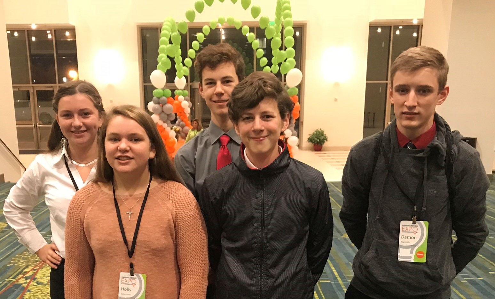

About Us
We started the idea in 2016 as a project of the Jasper County 4H Gearbots FLL team, and we were able to go onto 2 world competitions with it. After the FLL season was over, we decided to keep going with the project. We now have a full patent and are producing it. We created the Calf Pacifier because bottle calves do not get enough sucking time from the bottle. After a bottle calf is done eating, it will look for things to suck on to help it feel full. If a calf sucks on random objects or other calves, that is called cross-sucking. The result could be the calves getting sick. Studies have shown that just 10 minutes of extra sucking time after feeding reduces cross-sucking by 75%.
Our Team
Damon
President
Joshua
Vice President
Carlee
Treasurer
Holly
Secratary
Caleb
Reporter
Designer
Special Thanks To
- Cheryl Ness
- Linda Reynolds
- Beth Zahurones
- Tim Zarley
- Drew Manaat
- Brad Dodds
for Mentoring, Supporting, and Helping Us. We could not have gotten to where we are now without their help.